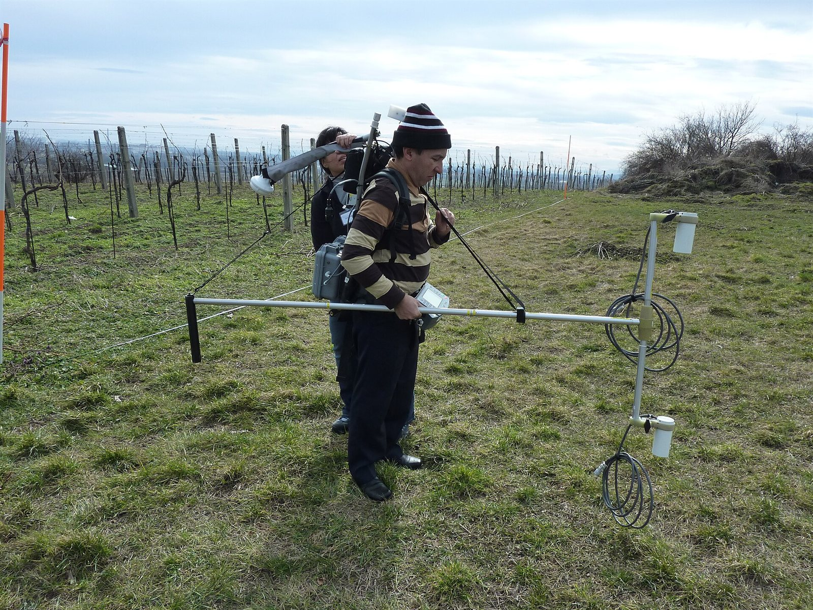

Magnetometría Terrestre (MAG)
Se recorre el terreno con un magnetómetro registrando el campo magnético punto a punto. Las anomalías revelan estructuras geológicas y objetos metálicos enterrados.
- Alcance típico
- 1 m – 500 m
- Trabajo de campo
- 1 a varios días, según el área
- Recibes
- Mapa de anomalías magnéticas
- Espacio necesario
- Recorridos a pie en una malla de líneas, lejos de cercas, vehículos y estructuras metálicas.
Para qué sirve
- Exploración minera
- Fallas y diques
- Tuberías y objetos metálicos
Se recomienda para: ubicar ductos o servicios enterrados, exploración minera.
Cuándo conviene otro método
- Solo detecta materiales con propiedades magnéticas.
- Cercas, autos y líneas eléctricas generan ruido.
- La profundidad de la fuente se estima: el modelo no es único.
¿Hasta dónde llega frente a los demás métodos?
MAG está marcado en naranja. Mueve la profundidad para ver qué otros estudios llegan a ella; toca cualquier barra para abrir su ficha.
Alcance típico de MAG: 1 m – 500 m.
Alcances típicos en condiciones normales; el alcance real depende del terreno, del espacio disponible y del equipo. Escala logarítmica.
Otros estudios magnetometría
Mide variaciones diminutas del campo magnético terrestre provocadas por rocas con minerales magnéticos u objetos metálicos enterrados. Rápida de adquirir y muy útil para mapear grandes áreas.
¿Este es el estudio que buscas?
Cuéntanos la ubicación, el objetivo y la profundidad que te interesa. Te confirmamos si MAG es la mejor opción y te enviamos la cotización.